기상기사 (2005-03-06 기출문제)
1과목: 기상관측법
1. 우량계의 수수기 설치에 관한 설명 중 틀리는 것은?
- 수수기는 지면으로 부터 20㎝ 높이가 되도록 한다.
- 수수기 주위에는 잔디를 심어 빗방울이 튀어 들어오지 않게 한다.
- 수수구는 수평보다 주 풍향쪽으로 약간 기울어지게 한다.
- 우리나라의 사용되는 수수기의 규격은 구경 20㎝, 높이 20㎝이다.
(정답률: 알수없음)

2. 눈이 내릴 때 나타나는 에코(echo)의 특성이 아닌 것은?
- 눈의 에코는 대체로 비의 경우보다 강도가 강하다.
- 건조한 눈의 에코일수록 강도가 약하다.
- 주로 층상에코나 대류성 에코 형태로 나타난다.
- 대류성 눈의 에코는 윤곽이 비교적 뚜렷하다.
(정답률: 알수없음)
3. 우리 나라의 기상관측소에서 관측시간은 지방표준시(L.S.T)를 사용하는 것이 편리하다. 이를 세계표준시(G.M.T)로 보정하려면?
- 6시간을 더한다.
- 6시간을 감한다.
- 9시간을 더한다.
- 9시간을 감한다.
(정답률: 알수없음)
4. 모발자기습도계에서 읽는 시도는 다음 중 어느 것인가?
- 상대습도
- 절대습도
- 혼합비
- 노점온도
(정답률: 알수없음)
5. 자동기상 관측소에서 종관기상 관측시의 정밀도 범위를 나타낸 것 중 적합치 않은 것은?
- 풍향 : ±30°
- 기압 : ±2.0 hpa
- 기온 : ±1℃
- 강수량 : ±0.5㎜ (단, 육상에서 5㎜ 이상 인 때)
(정답률: 알수없음)
6. 건습구 습도계로 관측된 습도의 오차를 가져오는 원인 중 적합치 않은 것은?
- 온도계 자체의 오차
- 온도(기온) 변화에 따른 오차
- 통풍 속도 변화에 의한 오차
- 습구에 부착된 천의 두께에 의한 오차
(정답률: 알수없음)
7. 대형 증발계에서 시침으로 읽은 값은 수온과 수위측정기의 온도가 몇 도 일 때 보정되어야 하는가?
- 4℃
- 10℃
- 15℃
- 24℃
(정답률: 알수없음)
8. 다음 중 실효습도에 대한 설명으로 가장 옳은 것은?
- 관측시의 증기압을 포화증기압으로 하는 온도
- 건조공기와 공존하고 있는 수증기의 질량
- 대기중에 실제로 포함되어 있는 수증기의 양
- 습도의 과거 경력이나 흡습성 물질의 실제 건조도
(정답률: 알수없음)
9. 잠열(latent heat)에 관한 설명 중 적당치 않은 것은?
- 상(phase)의 변화에 따른 열의 방출이나 흡수
- 0℃에서 물의 기화잠열은 약 597㎈/gm 이다.
- 수증기가 응결하여 물로 될 때 응결열을 흡수한다.
- 물분자가 고체에서 달아날 때에는 액체에서 달아날 때 보다도 다량의 열을 필요로 한다.
(정답률: 알수없음)
10. 다음 중 대기수상(hydrometeors)은 어느 것인가?
- 연무(haze)
- 연기(smoke)
- 먼지 연무(dust haze)
- 박무(mist)
(정답률: 알수없음)
11. 다인스 풍속계(Dines anemometer)의 설명 중 적당치 않은 것은?
- 풍향은 고정되어 있다.
- 풍압계의 일종이다.
- 풍속에 따른 압력차를 이용한 것이다.
- 휴대에 불편하다.
(정답률: 알수없음)
12. 항공기상 관측소에서 활주로 가시거리(R.V.R)를 관측할 때 활주로 부근에서 수평시정이 얼마 이하인때부터 관측하는 것으로 권고되고 있는가?
- 800m 이하
- 1500m 이하
- 3000m 이하
- 5000m 이하
(정답률: 알수없음)
13. 공기 중에 미세한 수적이 부유하여 관측자의 수평시정(Horizontal visibility)을 ( )이내로 제한할때를 안개(fog)라 한다. ( )안에 알맞는 거리는?
- 100m
- 1mile
- 1㎞
- 10m
(정답률: 알수없음)
14. 다음 노장(露場)의 조건 중 적합치 않은 것은?
- 그늘이 지지 않는다.
- 건물로 부터 건물 높이의 4배 이상 떨어져 있다.
- 높지 않은 언덕위에 있다.
- 키가 작은 잔디가 깔려 있다.
(정답률: 알수없음)
15. 로테이팅 빔 씨로메타(Rotating beam ceilometers)는 무엇을 측정하는 측기인가?
- 구름의 형태(운형)
- 최저 운저 높이
- 시정
- 대기 혼탁도
(정답률: 알수없음)
16. 애트모메터(atmometer)와 관계 없는 것은?
- 이배포리메터(evaporimeter)
- 이배포레이숀 게이지(evaporation gauge)
- 액티노메터(actinometer)
- 애트미도메터(atmidometer)
(정답률: 알수없음)
17. 비숍환(Bishop's ring)의 설명 중 적당치 않은 것은?
- 빛의 반사 작용에 의하여 발생된다.
- 해나 달을 중심으로 생긴다.
- 안쪽은 고운 청색이고,바깥쪽은 붉은 갈색을 띤 허여스럼한 고리이다.
- 먼지가 포함된 높은 구름층 때문에 발생한다.
(정답률: 알수없음)
18. 백엽상(百葉箱)내에 설치할 수 없는 기상관측 측기는?
- 자기 습도계
- 통풍 건습계
- 최고 온도계
- 자기 기압계
(정답률: 알수없음)
19. 기상위성에서 가시광선역 사진이라 함은 파장이 대략 얼마나 되는가?
- 0.1㎛
- 0.7㎛
- 7.0㎛
- 70.0㎛
(정답률: 알수없음)
20. 다음 중 직달 일사량을 관측할 수 있는 일사계는?
- Pyrheliometer
- Pyranometer
- Pyrgeometer
- Pyrradiometer
(정답률: 알수없음)
2과목: 대기열역학
21. 다음 습도 용어에서 차원(dimension)이 있는 것은?
- 상대습도
- 혼합비
- 비습
- 절대습도
(정답률: 알수없음)
22. 포화공기에서 기온(T), 노점온도(Td), 습구온도(Tw)의 관계는?
- T ＞ Tw ＞ Td
- T ＜ Tw ＜ Td
- T ＞ Tw = Td
- T = Tw = Td
(정답률: 알수없음)
23. 건조단열감률 (
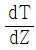
)을 옳게 표시한 것은? (단, Cv, Cp는 각각 정적비열, 정압 비열이며, g는 중력상수이다)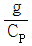
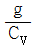
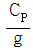
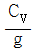
(정답률: 알수없음)
24. 다음 중 엔탈피(enthalpy, b)의 정의로 옳은 것은? (단, Cv, Cp, R은 각각 정적비열,정압비열,기체상수이다.)
- db = Cp dT
- db = Cv dT
- db = (Cv - R) dT
- db = (Cp + R) dT
(정답률: 알수없음)
25. 다음 중 층후(thickness)를 옳게 나타낸 식은? (단, Z와 P는 각각 고도와 기압을 나타내며, R, m은 건조 공기 기체 상수와 질량이며, g와 T＊는 각각 중력상수와 가온도이다.)
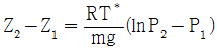
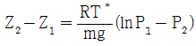
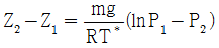
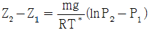
(정답률: 알수없음)
26. 이상기체의 밀도는 절대 온도와 압력과 어떠한 관계가 있는가?
- 절대온도에 반비례하고, 압력에 정비례
- 절대온도에 정비례하고, 압력에 반비례
- 절대온도에 반비례하고, 압력에 반비례
- 절대온도에 정비례하고, 압력에 정비례
(정답률: 알수없음)
27. 습윤단열 기온감율과 건조단열 기온감율이 다른 이유로서 가장 주요한 원인이 되는 것은?
- 잠열
- 태양열
- 상승속도
- 기압변화
(정답률: 알수없음)
28. 내부에너지의 변화량과 직접적으로 관련이 있는 변량은?
- 압력의 변화
- 체적의 변화
- 온도의 변화
- 정압 비열의 변화
(정답률: 알수없음)
29. 정적으로 안정한 대기에서 부력진동수의 특징이 옳게 설명된 것은?
- 허수로 나타난다.
- 음의 값을 갖는다.
- 양의 값을 갖는다.
- 0 이 된다.
(정답률: 알수없음)
30. 다음 중 이슬점 온도에 대한 설명으로 옳은 것은?
- 공기가 건조 단열적으로 1000hPa 고도에 도달했을 때의 온도
- 건조 공기가 습윤 공기와 같은 밀도를 갖게 될 때의 온도
- 일정한 압력에서 공기가 포화될 때까지 증발하는 수증기에 의해 냉각될 때의 온도
- 기압과 혼합비가 일정한 상태에서 습윤 공기를 냉각시킬 때 포화가 일어나는 온도
(정답률: 알수없음)
31. 1몰의 기체에 대한 상태방정식은 pV = R*T 이다. 다음 중 각 문자의 단위를 잘못 적은 것은?
- p 의 단위는 N/m2
- V 의 단위는 m3mol-1
- R* 의 단위는 Jmol-1K-1
- T 의 단위는 ℃ 이다.
(정답률: 알수없음)
32. 다음 중 열역학 선도( Thermodynamic diagram, 또는 대기선도)에 원래 포함되어 있지 않는 선은?
- 등온선
- 건조단열선
- 포화단열선
- 상대습도선
(정답률: 알수없음)
33. 밀도가 1.275 kg/m3 인 기체의 비체적은 얼마인가?
- 0.56 m3/kg
- 0.78 m3/kg
- 0.92 m3/kg
- 1.12 m3/kg
(정답률: 알수없음)
34. 대기중의 수증기량을 나타내는 변수만 늘어 놓은 것은?
- 비습, 혼합비, 온위
- 노점온도, 가온도, 증기압
- 상당온도, 임계온도, 습구온도
- 상대습도, 임계압력, 증기압
(정답률: 알수없음)
35. 다음 중 Skew T - Log P 단열선도의 특징이 아닌 것은?
- 단열선과 등온선의 교각이 45° 에 가깝다.
- 단열선도의 기본선들이 직선에 가깝다.
- 가로와 세로축 모두 lnP 의 함수이다.
- 공기의 운동 과정을 나타내는 선들에 의해 둘러싸인 면적은 그 과정 동안의 에너지 변화량과 비례한다.
(정답률: 알수없음)
36. 단열선도 분석을 통하여 알아낼 수 없는 것은?
- 대기안정도
- 층두께
- 대기열역학과정
- 빗방울의 성장율
(정답률: 알수없음)
37. 건조공기의 분자량을 Md, 수증기의 분자량은 Mv 라 할 때 Mv/Md 의 값은?
- 0.286
- 0.622
- 0.610
- 1.609
(정답률: 알수없음)
38. 그림에서 면적 P와 면적 N를 비교하여 P ＞ N 이면?
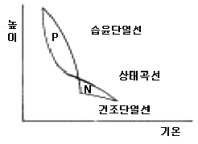
- 위성잠재 불안정
- 진성잠재 불안정
- 안정형
- 절대 안정형
(정답률: 알수없음)
39. 1 Joule은 약 몇 ㎈의 열량에 해당되는가?
- 4.20
- 2.45
- 0.24
- 0.04
(정답률: 알수없음)
40. 높이 증가에 따라 상당온위가 증가하는 대기층은?
- 대류안정
- 대류 불안정
- 중립
- 조건부 불안정
(정답률: 알수없음)
3과목: 대기운동학
41. 온위가 고도에 관계없이 거의 일정한 층은?
- 혼합층
- 에크만층
- 접지경계층
- 내부경계층
(정답률: 알수없음)
42. 폐곡선 운동에 대한 순환의 일반적인 정의는?
- 곡선상의 접선속도와 회전중심에서의 거리를 곱한 것이다.
- 접선속도의 변화의 평균에 폐곡선의 길이를 곱한 것이다.
- 곡선에 접하는 속도의 평균에 폐곡선의 길이를 곱한 것이다.
- 접선속도의 평균과 곡선으로 둘러싸인 면적의 곱이다.
(정답률: 알수없음)
43. 다음 온도풍에 관한 기술 중 틀린 것은?
- 층후(層厚)에 비례한다.
- 평균 가온도에 비례한다.
- 평균 기압에 비례한다.
- 평균 가온도선에 평행하다.
(정답률: 알수없음)
44. 다음 중 코리올리 인자의 그래프를 옳게 표현한 것은?
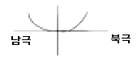
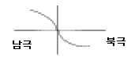
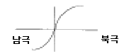
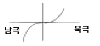
(정답률: 알수없음)
45. 대기의 기본 운동 방정식에 직접 관계되는 법칙은?
- 뉴톤의 운동 제 1법칙
- 뉴톤의 운동 제 2법칙
- 뉴톤의 운동 제 3법칙
- 뉴톤의 만유인력 법칙
(정답률: 알수없음)
46. 정역학 방정식이란 무엇을 의미하는가?
- 정지상태의 대기에 적용되는 운동방정식을 의미한다.
- 수평기압 경도력과 중력이 평형을 이루는 상태를 기술한 것이다.
- 연직기압 경도력과 중력이 평형을 이루는 상태를 기술한 것이다.
- 연직기압 경도력과 전향력이 평형을 이루는 상태를 기술한 것이다.
(정답률: 알수없음)
47. 경계층에서 마찰력의 역할에 대한 기술 중 타당한 것은?
- 기류의 방향은 등압선을 횡단하여 저기압쪽으로 향하게 한다.
- 실제풍속만 감소시킬 뿐이다.
- 원심력과 전향력에는 영향을 미치지 않는다.
- 기압경도력을 줄인다.
(정답률: 알수없음)
48. 공기덩이를 수직방향으로 δz 만큼 이동시켰을 때 이 공기덩이가 받는 가속도는 다음과 같이 표시된다.
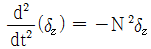
이 때 N를 무엇이라 하는가?- Rossby number
- Richardson number
- Reynolds number
- Brunt V is ll frequency
(정답률: 알수없음)
49. 말 위도(horse latitude)는 무엇의 결과인가?
- 극 전선대
- 극 고기압
- 열대 수렴대
- 아열대 고기압
(정답률: 알수없음)
50. 등속으로 회전하는 좌표계에서 나타나는 2가지 겉보기 힘은?
- 전향력, 마찰력
- 원심력, 전향력
- 전향력, 만유인력
- 원심력, 만유인력
(정답률: 알수없음)
51. 로스비파에 관한 다음 설명 중 옳은 것은?
- 로스비파의 진행속도는 파장에 무관하다.
- f-plane에서는 로스비파가 발생하지 않는다.
- 로스비파는 기본류의 방향으로 진행한다
- 로스비파의 진행속도는 위도에 무관하다.
(정답률: 알수없음)
52. 대기압의 차원(dimension)은? (단, 아래식에서 M은 질량, L은 길이, T는 시간, θ는 온도를 나타낸다.)
- [ML-1T-2]
- [MLT-2]
- [ML2T-2]
- [L2T-2θ-1]
(정답률: 알수없음)
53. 사이클론성(시계반대방향)의 흐름에 대하여 지균풍 근사가 경도풍근사와 10% 차이가 난다면, Vg / (fR)의 값은? (여기서 Vg 는 지균풍속, f는 코리올리 파라미터, R은 곡률 반경이다)
- 0.1
- 0.01
- 0.11
- 0.101
(정답률: 알수없음)
54. 기상요소의 장기평균값에 대한 전반구 분포를 고려할 때 대기 대순환은 몇 가지 구속조건을 받는다. 다음 중 적당하지 않은 것은?
- 열수지 상태가 균형을 이루어야 한다.
- 지구-대기계의 각 운동량이 보존되어야 한다.
- 지상기압의 장기평균값이 전지구표면에 동일한 값으로 분포되어야 한다.
- 수증기 분포의 장기평균은 시간에 따라 변하지 않아야 한다.
(정답률: 알수없음)
55. 다음 중 지균풍을 잘못 설명한 것은?
- 등압선에 나란히 분다.
- 등압선 간격이 같을 때 적도에서 가장 약하다.
- 등고선 간격이 같을 때 상층으로 갈수록 강해진다.
- 남반구에서는 고기압을 왼쪽에 두고 분다.
(정답률: 알수없음)
56. 남북의 차등 가열과 관련이 깊은 파는?
- 로스비파
- 경압불안정파
- 순압불안정파
- 켈빈-헬름홀츠파
(정답률: 알수없음)
57. 원형의 등압선을 갖는 고기압과 저기압의 특성을 설명한 것 중 적합지 못한 것은?
- 지면마찰이 없다면 공기는 수평면 내에서 원운동을 한다.
- 마찰의 영향으로 바람은 등압선을 가로질러 흐른다.
- 지면마찰의 영향으로 저기압에서는 수렴하는 기류가 상승하므로 날씨가 악화된다.
- 지상저기압의 중심부근에서는 상층까지 수렴이 계속된다.
(정답률: 알수없음)
58. 대기 대순환에 대한 설명으로 틀린 설명은?
- 적도에서 상승하여 고위도로 이동하는 공기는 아열대에서 침강한다.
- 북반구에선 고위도에서 저위도로 이동하는 공기는 서쪽으로 전향한다.
- 공기는 파동형태로 적도와 극지방 사이에 에너지를 수송한다.
- 지구 전체로 보아 편서풍이 편동풍보다 현저하다.
(정답률: 알수없음)
59. 다음의 중력에 관한 설명 중 맞는 것은?
- 크기는 적도에서 가장 크다.
- 고도가 높을수록 크다.
- 적도에서는 중력의 방향과 국지(local)연직 방향이 같다.
- 극에서는 중력의 방향과 국지(local)연직 방향이 다르다.
(정답률: 알수없음)
60. 북반구에서 편서풍이 북쪽으로 갈수록 증가할 때는?
- 국부적으로 고기압성 와도를 갖는다.
- 국부적으로 저기압성 와도를 갖는다.
- 국부적으로 와도는 0 이다.
- 국부적으로 절대와도는 주기적 변화를 보인다.
(정답률: 알수없음)
4과목: 기후학
61. 대륙도(continentality)의 결정에 필요한 기후요소가 아닌 것은?
- 기온의 연교차
- 기단의 빈도
- 강수의 계절변화
- 일사량의 연변화
(정답률: 알수없음)
62. 인간의 활동이나 생활에 가장 적합한 최적기후를 판단하기 위하여 테일러는 월별 체감기후를 나타내는 클라이모 그래프를 만들었다. 이 도면상에 주어지는 함수는?
- 종축에 기온, 횡축에 강수량
- 종축에 습구온도, 횡축에 상대습도
- 종축에 기온, 횡축에 상대습도
- 종축에 습구온도, 횡축에 강수량
(정답률: 알수없음)
63. 지표면으로 부터 높이 5㎝, 50㎝, 150㎝, 300㎝에서 각각 기온을 기록하고 있다. 하루 중 기온의 일변화가 가장 작은 곳은?
- 5㎝
- 50㎝
- 150㎝
- 300㎝
(정답률: 알수없음)
64. 세계적인 기후자료를 얻기 위하여 평년치(normal value)를 구하는 방법은?
- 10년간의 평균치를 구한다.
- 20년간의 평균치를 구한다.
- 30년간의 평균치를 구한다.
- 40년간의 평균치를 구한다.
(정답률: 알수없음)
65. 기온의 연교차(年較差)는 대륙성 기후와 해양성 기후를 구별하는 중요한 기후요소의 하나이다. 거의 같은 위도상에 놓여있는 Norway의 Trondhein과 Siberia의 Verkhoyansk에서의 기온의 연교차는 그 중 가장 대조적인 값을 갖고 있는 바 다음 글 중 옳은 것은?
- Trondhein의 연교차는 7℃이다.
- Trondhein의 연교차는 17℃이다.
- Verkhoyansk의 연교차는 57℃이다.
- Verkhoyansk의 연교차는 77℃이다.
(정답률: 알수없음)
66. 위도에 따른 강수량의 분포를 옳게 나타낸 그림은?
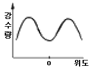
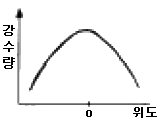
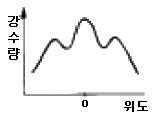
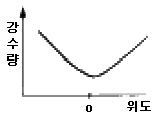
(정답률: 알수없음)
67. 7월 중 평균 해면온도(sea level temperature)가 가장 높은 곳은?
- 아프리카 북서부 지역
- 남아메리카 북부지역
- 오스트레일리아 지역
- 하와이 지역
(정답률: 알수없음)
68. 지표면이 받는 실제 일사량은 다음 중 어느 곳이 가장 많은가?
- 적도부근
- 남북위 20° 부근
- 남북위 40° 부근
- 남북위 60° 부근
(정답률: 알수없음)
69. 열대건조 기후는 대륙의 서해안에서 위치하며 해류의 영향을 받고 있다. 이러한 해류에 해당되지 않는 것은?
- California 해류
- Humbolt 해류
- Kuroshio 해류
- Benguela 해류
(정답률: 알수없음)
70. 섬이나 해안지방에 안개가 많이 끼는 원인으로 타당한 이유는?
- 습기가 많기 때문이다.
- 해륙풍이 불기 때문이다.
- 먼지가 많기 때문이다.
- 바람이 강하기 때문이다.
(정답률: 알수없음)
71. 다음 중 열대성 저기압이 발생치 않는 해역은?
- 북태평양
- 남태평양
- 북대서양
- 남대서양
(정답률: 알수없음)
72. 다음 중 기후 요소(climatic element)에 속하는 것은?
- 기온
- 운량
- 해류
- 지형
(정답률: 알수없음)
73. 다음 강수의 일변화에 관한 설명 중 해양형에만 해당하는 것은?
- 최고 기온이 나타날 무렵에 강수가 많다.
- 고위도 보다 저위도 지방에서 뚜렷하다.
- 여름 보다는 겨울에 강수현상이 뚜렷하다.
- 밤에 대기가 불안정할 때 많은 강수가 있다.
(정답률: 알수없음)
74. 랑(Lang)의 우량인자에 해당되는 것은?
- 연 강수량 / 연 가강수량
- 연 강수량 / 연 평균기온
- 연 강수량 / 연 평균습도
- 연 강수량 / 하절 강수량
(정답률: 알수없음)
75. 다음 1월과 7월의 기온특색에 대한 설명 중 틀린 것은?
- 일반적으로 양반구가 다같이 적도에서 극으로 갈수록 기온이 낮아진다.
- 대륙에는 여름에 심한 고온지역이 나타나고 겨울에는 심한 저온지역이 나타난다.
- 같은 위도권에서는 남반구보다 북반구가 여름과 겨울의 차가 크다.
- 남반구가 북반구보다 기온의 지역적 차가 크고 특히 여름에 심하다.
(정답률: 알수없음)
76. 물수지(water balance) 계산은 토양수분 저유량을 얼마로 하느냐에 따라 달라진다. 우리나라의 토양수분 저유량은?
- 100㎜
- 200㎜
- 300㎜
- 400㎜
(정답률: 알수없음)
77. 골바람(谷風)에 관한 설명 중 옳은 것은?
- 일중에 계곡을 향해서 부는 바람
- 야간에 계곡을 향해서 부는 바람
- 일중에 정상을 향해서 부는 바람
- 야간에 정상을 향해서 부는 바람
(정답률: 알수없음)
78. 위도 30 ∼ 40도의 대륙 서안에서 건계와 우계의 구별이 뚜렷하며 오스트레일리아의 남서부, 미국의 캘리포니아와 칠레의 중부 등에 나타나는 기후는?
- 사바나 기후
- 서안해양성 기후
- 지중해성 기후
- 아열대성 기후
(정답률: 알수없음)
79. 지중해성 기후의 남쪽 연변에 나타나는 기후는 KÖppen의 기후구분으로 어떤 기후인가?
- Af
- Bs
- Cf
- Bw
(정답률: 알수없음)
80. 다음 중 기후 변동의 원인과 가장 관계가 적은 것은?
- 대륙의 이동
- 지자기의 변화
- 화산활동
- 태양활동의 변화
(정답률: 알수없음)
5과목: 일기분석 및 예보론
81. 블로킹 고기압(blocking high)과 절리 저기압(cut-offlow)에 대한 설명 중 올바르지 않은 것은?
- 호우, 가뭄, 저온 현상 등과 같은 이상 기상의 원인이 된다.
- 열의 남북 교환이 활발할 때 주로 형성된다.
- 편서풍이 강한 시기에 생성된다.
- 블로킹이 형성되면 고기압과 저기압의 정상적인 이동속도에 영향을 준다.
(정답률: 알수없음)
82. 중위도 서풍계에서 저시수(low index)가 나타날 때의 기상현상으로 적당하지 않은 것은?
- 기압계의 이동속도가 빠르다.
- 절리고기압(cut-off low)이 나타난다.
- 일기현상의 변화가 적다.
- 기류의 남북 사행이 크다.
(정답률: 알수없음)
83. 대규모 대기운동 방정식에 직접 포함되지 않는 것은?
- 기압경도력
- 원심력
- 중력
- 전향력
(정답률: 알수없음)
84. 다음 중 시정이 가장 양호한 곳은?
- 온난전선 전면
- 온난전선 후면
- 한냉전선 전면
- 한냉전선 후면
(정답률: 알수없음)
85. 1000 hPa ~ 500 hPa 층후층의 특징이 아닌 것은?
- 700hPa의 온도분포와 비슷하다.
- 지상전선의 한기쪽에 등층후선이 조밀하다.
- 대기 하층의 기온분포와 관계없다.
- 층후선이 조밀한 곳에 강풍대가 위치한다.
(정답률: 알수없음)
86. 지구의 지표면 온도를 약 285K라 하면 최대 에너지가 방출되는 파장의 범위는?
- 0.4㎛ ∼ 0.8㎛
- 0.9㎛ ∼ 4㎛
- 5㎛ ∼ 8㎛
- 10㎛ ∼ 11㎛
(정답률: 알수없음)
87. 일기분석에서 사용하지 않은 전선명칭은?
- 한대전선
- 활승전선
- 활강전선
- 대륙전선
(정답률: 알수없음)
88. 관성류(Inertial flow)의 곡률반경을 나타내는 식은? (단, V : 수평속도, f : 코리올리 파라미터)
- -V/f
- -f/V
- fV
- fV/2
(정답률: 알수없음)
89. 뇌우는 대기순환의 다음 규모 중 어느 것에 속하는가?
- 대규모
- 종관규모
- 중간규모
- 작은규모
(정답률: 알수없음)
90. 온대지방에서 상층의 바람은?
- 편서풍
- 편동풍
- 편북풍
- 무역풍
(정답률: 알수없음)
91. 다음의 운형 변화 중 차차 저기압권내로 들어가고 있는 상태를 나타낸 것은?
- Cu → Cb → Cc
- St → Ac → Sc
- Cs → As → Ns
- St → Ns → Ac
(정답률: 알수없음)
92. 장마전선은 다음 중 어느 것인가?
- 한냉전선
- 온난전선
- 폐색전선
- 정체전선
(정답률: 알수없음)
93. 다음 중 천둥과 번개가 나타나는 구름인 것은?
- 적란운
- 층운
- 층적운
- 고층운
(정답률: 알수없음)
94. 상당온도와 기온과의 차는 무엇으로 주어지는가 (단, γ는 혼합비를 나타내며, 기타 기호들은 통상적으로 사용되는 정리를 가진다)
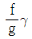
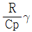
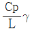
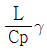
(정답률: 알수없음)
95. FM 12 - SYNOP은 어떤 기상 전문인가?
- 해상 실황기상 전보식
- 지상 실황기상 전보식
- 상층 실황기상 전보식
- 상층해상 실황기상 전보식
(정답률: 알수없음)
96. 대기선도에서 대기의 상층으로 갈수록 서로 거의 나란하게 그려지는 선은?
- 포화 혼합비선과 건조단열선
- 건조단열선과 습윤단열선
- 습윤단열선과 등온선
- 등온선과 포화 혼합비선
(정답률: 알수없음)
97. 수치 예보 과정을 올바로 설명한 것은?
- 객관분석 → 초기화 → 모델예보 → 출력
- 초기화 → 객관분석 → 모델예보 → 출력
- 초기화 → 모델예보 → 객관분석 → 출력
- 객관분석 → 모델예보 → 초기화 → 출력
(정답률: 알수없음)
98. 정지대기(일반류의 속도 = 0)에서 대규모 요란의 위상속도는? (단, 기호는 교과서에서 통용되는 대로이다.)
- 0
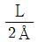
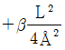
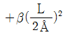
(정답률: 알수없음)
99. 스케일고도(Scale Height)의 값으로 가장 알맞는 것은?
- 기압이 해면값의 약 37% 되는 높이
- 기압이 해면값의 약 47% 되는 높이
- 기압이 해면값의 약 57% 되는 높이
- 기압이 해면값의 약 97% 되는 높이
(정답률: 알수없음)
100. 지상일기도를 만들 때 사용되는 지상일기도 자료 중 가장 대표적인 자료는?
- 기압
- 기온
- 바람
- 노점온도
(정답률: 알수없음)
수수구는 수평보다 주 풍향쪽으로 약간 기울어지게 하는 이유는 비가 내리면 수수구에 물이 모이고, 그 물이 바로 수로로 흐르지 않고 수수구 안에 머무르기 때문입니다. 따라서 수수구가 수평보다 약간 기울어져 있으면 물이 자연스럽게 수로로 흐를 수 있습니다.